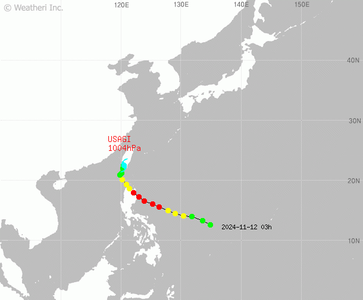

태풍 경로
- 현재 위치: 경주시 북동쪽 30km
- 풍속: 140km/h
- 중심 기압: 960hPa
- 예상 이동 경로: 북서쪽으로 시속 20km 이동
- 피해 예상: 경주시 전역 강풍 및 폭우
피해 예상 지역
-
2023년 8월 10일
경주시 남부 지역, 강풍 및 폭우 피해 예상
상세 내용: 저지대 침수 가능성 높음, 주민 대피 권고
-
2023년 8월 11일
감포읍 해안가, 높은 파도 및 강풍 피해 예상
상세 내용: 해안가 접근 금지, 방파제 정비 필요
-
2023년 8월 12일
불국사 지역, 산사태 발생 가능성
상세 내용: 산사태 취약 지역 주민 철수 권고